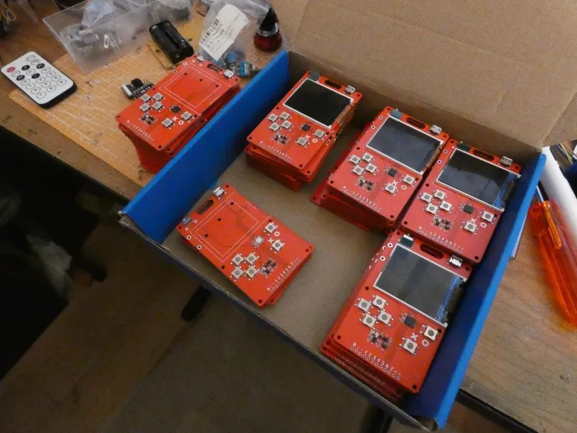

Practicality Beats Purity¶
Published on 2024-06-23 in PewPew LCD.
It’s been a while since the last update in this project, but that doesn’t mean nothing was happening. In fact, the whole project got a complete overhaul, as I reevaluated the goals and the methods of reaching them.
I went back all the way to the PewPew M4 design, including standard thickness PCB, a micro-USB socket that is not made out of the PCB, and a plastic battery holder for two AAA batteries. And physical buttons. I also changed the display to a ST7735, 180x128, 1.8” color TFT.
Why such sudden changes? Well, the short answer is: because I need a reliable, working, non-experimental device that can be easily produced at scale for workshops right now. The long answer requires me to fill in some details.
First of all, all the cool features like the USB port and battery holder made of PCB itself require a thin 0.6mm PCB. Which is usually more expensive, not available in colors, or not available for assembly with PNP machines. Or all three. So I dropped all that in order to be able to use the cheapest assembly options out there.
Second, while the Nokia display is very reasonably priced at 1 USD, and it gives us all a warm feeling reusing old parts that would rot in the warehouse somewhere otherwise, it’s problematic, because you can’t have to buy it separately and solder onto all the consoles yourself. And no, you can’t use a connector, because you can’t buy matching connectors. On the other hand, ST7735 displays go for 2 USD, are bigger, have better contrast, better support in software and will be around for a while yet. And surprise surprise, they also come from old (though slightly more recent) Nokia phones.
Third, and this is entirely my fault, I can’t get the touch buttons working reliably. The problem is that I’m only checking them when the keys are checked in the game loop. And at 12 or even 6 FPS, that is not often enough. So they feel unreliable and laggy. I would need to write a version of the keypad library for CircuitPython that checks them in the background (or uses interrupts), and I made an attempt at this, but I’m blocked by the proprietary qtouch library that the SAMD21 uses. So I accepted the additional cost and went back to physical buttons. I found tact switches that are clicky but have low actuation power, and they feel great.
I’m now in the process of assembling 50 units for a workshop I will be running in two weeks. Wish me luck.
